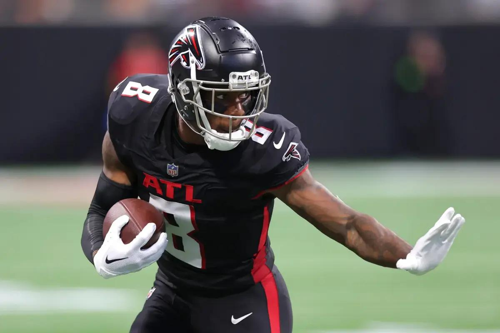

Kyle Pitts
Tight End
Jersey Number: #8
Age: 23
2024 Season Highlights
- Receptions: 85 receptions
- Receiving Yards: 1,100 yards
- Touchdowns: 9 touchdowns
- Yards per Reception: 12.9 yards
- Longest Reception: 68 yards
- Team Achievement: 9-8 record, NFC South Division Champion
Playoff Performance
- NFC Divisional Round: 7 receptions, 90 yards, 1 touchdown vs. San Francisco 49ers (Falcons win)